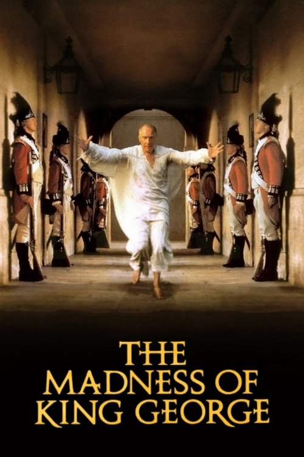

The Madness of King George (1994)
الوصف: Aging King George III of England is exhibiting signs of madness, a problem little understood in 1788. As the monarch alternates between bouts of confusion and near-violent outbursts of temper, his hapless doctors attempt the ineffectual cures of the day. Meanwhile, Queen Charlotte and Prime Minister William Pitt the Younger attempt to prevent the king's political enemies, led by the Prince of Wales, from usurping the throne.
الممثلون
- Nigel Hawthorne (George III)
- Helen Mirren (Queen Charlotte)
- Ian Holm (Willis)
- Anthony Calf (Fitzroy)
- Amanda Donohoe (Lady Pembroke)
- Rupert Graves (Greville)
- Geoffrey Palmer (Warren)
- Julian Wadham (Pitt)
- John Wood (Thurlow)
- Rupert Everett (Prince of Wales)
المخرج: Nicholas Hytner
المنتج: David Parfitt